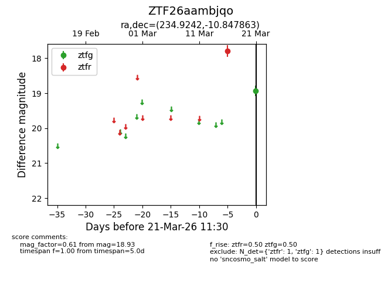
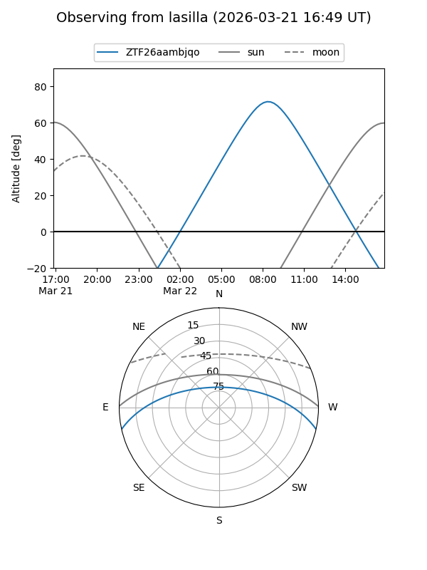
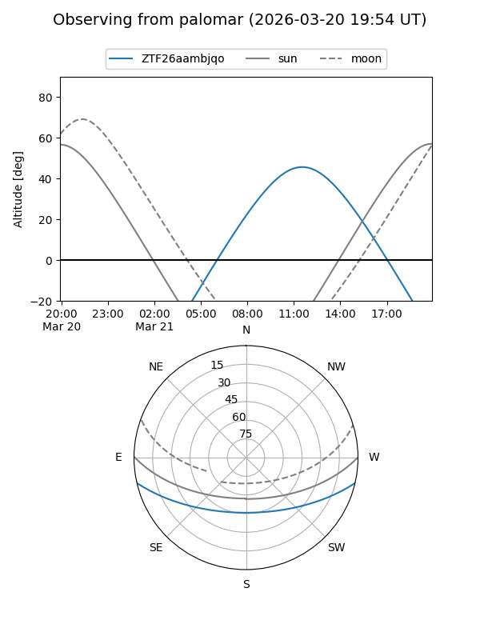

ZTF26aambjqo
Target ZTF26aambjqo at 2026-03-21 11:32
Aliases and brokers:
FINK: link
Lasair: link
ALeRCE: link
alt names
ZTF26aambjqo (ztf,fink_ztf)
Coordinates:
equatorial (ra, dec) = 234.9242,-10.84786
equatorial (HMS+DMS) = 15:39:41.80,-10:50:52.31
galactic (l, b) = (355.7033,+34.26999)
Flags:
Photometry:
last ztfg=18.93, ztfr=17.79
1 ztfg, 1 ztfr detections
Lightcurve

Visibility


Additional plots